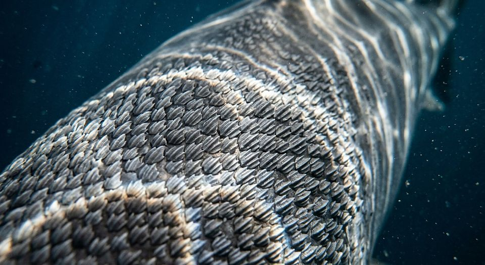

La peau du requin
Nager vite dans l’eau revient à nager dans du miel : chaque frottement coûte.
Ce que cela ne dit pas Le gain n’est pas universel : la même surface augmente la traînée aux vitesses élevées. La réduction de 8,7 % vaut à faible vitesse, sur une réplique imprimée, pas sur un requin vivant.
Source primaire Wen, L., Weaver, J. C. & Lauder, G. V. (2014). Biomimetic shark skin: design, fabrication and hydrodynamic function. J. Exp. Biol. 217(10): 1656-1666 · doi:10.1242/jeb.097097
8,7 % de traînée en moins (faible vitesse) 2014
Salle(s) liée(s) : salle 13